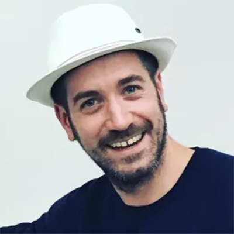
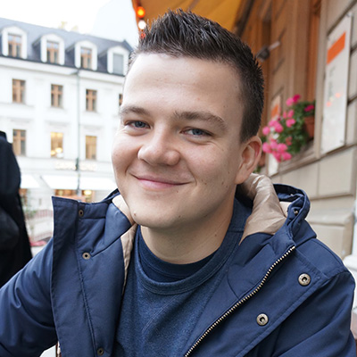
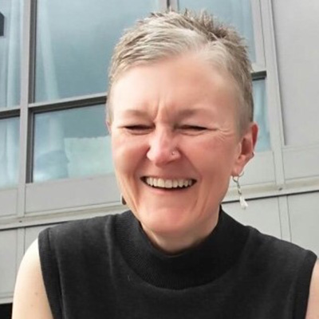
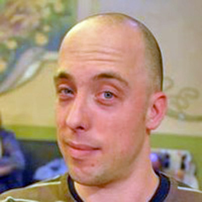
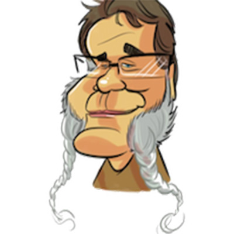

Speakers
#a11yTOConf is thrilled to announce our first round of world renowned speakers. We’re not done yet, stay tuned for the next batch of speakers soon!
Hosts:
Makoto Ueki

Web Accessibility Consultant in Japan. Makoto has been contributing to the JIS (Japanese Industrial Standard) Working Group and W3C WCAG Working Group as a web accessibility expert. And he has been a chairman of the Web accessibility Committee in Japan (WAIC) since 2012.
Léonie Watson

Léonie is Director of Developer Communications at The Paciello Group (TPG), and a member of the W3C Advisory Board. She is also co-chair of the W3C Web Platform Working Group, where she is responsible for many specifications including IndexedDB, Push API, Pointer Lock API, Gamepad API, ARIA in HTML, and the HTML Accessibility API Mapppings (AAM). She has also written about web standards, accessibility mechanics, and pushing the boundaries of inclusive design (with existing technologies like SVG, HTML, ARIA, and JavaScript, as well as new technologies like AI and WebVR) for Smashing magazine, SitePoint.com, and Net magazine, as well as on her own site Tink.UK.
Speakers:
Rob Dodson

Rob Dodson is a developer advocate at Google where he focuses on accessibility and web components. His mission is to fight for a better web and to help developers build great experiences. You can catch him every other week on his YouTube series A11ycasts.
Alwar Pillai
Alwar is passionate about technology working for all users, especially the edge cases. As a newcomer to Canada in 2015, she waited on tables while working on her Masters of Inclusive Design. Before graduating, she became an accessibility expert for the province and then led digital accessibility at Rogers Communications. Today, Alwar is the CEO of Fable Tech Labs, a B2B SaaS company that helps businesses engage people with disabilities in the product development cycle.
Steve Faulkner

Steve is the Technical Director at TPG. He joined The Paciello Group in 2006 and was previously a Senior Web Accessibility Consultant at Vision Australia. Steve is a member of several groups, including the W3C Web Platforms Working Group and the W3C ARIA Working Group. He is an editor of several specifications at the W3C including ARIA in HTML, Using ARIA. He also develops and maintains HTML5accessibility and the JAWS bug tracker/standards support.
Siri Betts-Sonstegard

Siri Betts-Sonstegard is a Design Researcher & Service Designer currently working on developing innovative cognitive tools for clinicians at IBM Watson Health. Before joining IBM, she worked as part of the Design Innovation Group (DIG) at Memorial Sloan-Kettering Cancer Center, where she focused on understanding patient needs through human-centered design methods and approaches to develop new digital products and services. Additionally, Siri teaches Disruptive Design as part of the MFA Design for Social Innovation at the School of Visual Arts.
Heydon Pickering

Heydon is a design consultant focused on accessibility and design systems. He has worked with The Paciello Group, The BBC, and the green energy company, Bulb. He authored the book Inclusive Design Patterns and writes about coding accessible components at inclusive-components.design. He's interested in the mathematics of sound and typography.
Cordelia Dillon

Cordelia McGee-Tubb is a lead accessibility engineer at Salesforce and a technology tutor at her local senior center. When not digging through the DOM or chatting about inclusive design patterns, she can often be found drawing comics, circumambulating cities, and/or scouring the internet for silly hats.
John Foliot

John is an internationally recognized Web Accessibility Specialist and vocal champion for the cause of web standards and universal accessibility. John is currently a Principal Accessibility Strategist at Deque Systems Inc., where he works with their clients toward establishing effective Accessibility Programs, training, and content creation practices. He is an active Contributor at the W3C in the areas of HTML5, WCAG 2.1 (and related topics), Personalization and Cognition, Accessible Platform Architecture WG, Media/Timed-Text and related topics, and was an invited speaker at the W3C Television on the Web Interest Group.
Sam Chandrashekar
Sam is the Accessibility Program Manager at D2L Corporation, the education technology company behind Brightspace Learning Management System (LMS). Sam is also a member of the Post-Secondary Education Standards Development Committee under the Accessibility for Ontarians with Disabilities Act (AODA), 2005. With years of teaching experience at OCAD University's Master of Design program in Inclusive Design, Sam is passionate about reaching education to all learners through accessible technology that supports inclusive pedagogy.
David Lepofsky

David Lepofsky is a visiting professor (part-time) at the Osgoode Hall Law School and an adjunct member of the University of Toronto Faculty of Law. He is chair of the Accessibility for Ontarians with Disabilities Act Alliance. He is a member and past chair of the Toronto District School Board’s Special Education Advisory Committee. And since the late 1970s, he has been active in a volunteer capacity, advocating for new laws to protect the rights of persons with disabilities in Canada.
Jesse Beach

Jesse Beach's technology career started in linguistic research, shifted to UX design and then landed solidly in front end development. At Facebook she channels her energies into building tools and components that support accessible interface development. She believes that all humans should have access to information and services, whatever their abilities or circumstances.
Ian Hamilton

Ian has a 10 year background in game accessibility, initially across a wide range of products at the BBC, including making games accessible for preschool children with profound motor and cognitive impairment. He now works independently throughout the wider industry, collaborating with developers, publishers, manufacturers, academia and industry bodies. Pursuing avenues to raise the profile and understanding of accessibility across the industry, such as consulting directly on individual games and features, speaking, teaching, training, organising awareness raising events, leading work on internal and industry best practices, and advising on strategy and and government funding processes.
Melissa Banyard
Melissa is a design researcher for the Borderless Higher Education for Refugees Project. Her mission as a digital accessibility expert and researcher is to bridge the gap between assumptions and the real experiences of users with disabilities. Having specialized in designing in collaboration with nonverbal children, Melissa believes in surpassing the guidelines of AODA by making space for users and experts of all abilities throughout the design process.
Eric Bailey
Eric is a designer at thoughtbot, with a focus on accessible and inclusive design. He's a member of the A11y Project, an occasional author at CSS-Tricks, and recovering curmudgeon.
Tara Voelker

Tara has a background as AAA industry vet, working on titles such as Red Faction: Guerrilla, Bioshock Infinite and Evolve. She is also a passionate accessibility advocate, having previously served as the IGDA Game Accessibility chairperson and is currently the Co-Director of GAConf,a conference dedicated to game accessibility. Today, Tara is a Program Manager at Mixer, wrangling new features as well as heading up their accessibility efforts. She’s also Gaming and Disability Community Lead at Xbox as part of the Gaming for Everyone program. Jenny Lay-Flurrie, Chief Accessibility Officer at Microsoft, once called her Xbox royalty, and she’s been pretty obnoxious ever since.
Thomas Logan
Thomas has spent the past fifteen years assisting organizations to create technology solutions that work for people with disabilities. Over his career Thomas has worked on project deliverables for numerous federal, state, and local government agencies as well as private organizations from startups to Fortune 500s. He is the owner of Equal Entry, whose mission is: "contribute to a more accessible world." He is also co-organizer of Accessibility New York, a monthly Meetup for people interested in topics related to accessibility and people with disabilities.
Carie Fisher
Carie is a Senior Accessibility Instructor and Developer at Deque. She has been building websites professionally since 2005 and is passionate about accessibility and promoting diversity in the tech world. She founded both the A11y Style Guide and the YouTube series Accessibility Talks to help educate others on website accessibility, and is a team member of the A11y Project, the A11y Store, and the 24 Accessibility article series.
Manuel Matuzović
Manuel is a frontend developer from Austria who's specialized in HTML, CSS, accessibility and front-end performance. He likes to write about these topics and talk at meetups and conferences. He's also organizer of the webclerks and CodePen meetup in Vienna.
Vanessa Wells
Vanessa is a book editor, proofreader and indexer with caption-writing experience who has married the two areas to ensure excellence in captions for improved accessibility. #NoMoreCraptions! Other than that, I have hyperacusis, tinnitus and Ménière's disease; I used to be a Latin teacher; I'm studying ASL. (Also, Crazy Cat Lady.)
Job van Achterberg
Job works as tech lead at http://Tenon.io and a volunteer firefighter in The Netherlands. He co-organises the 'Inclusive Design and Accessibility (idea11y)' meetup group.
Shell Little
Shell Little is an Accessibility Specialist at Wells Fargo on their Accessible User Experience (AUx) team. With a BA in UX with a concentration in Accessibility from Michigan State University (MSU), she is passionate about disability rights and the practice of User Centered Design. Prior to Wells Fargo she worked within MSU's Digital Content and Accessibility Team ensuring the software purchased by the University was accessible for their students, faculty, and staff. Outside the office, Shell is a proud animal parent to a large menagerie, an active member of the LGBTQ community, outdoor enthusiast, and a self-proclaimed nerd.
Doug Schepers
Doug is a developer who defined Web technologies and standards at W3C for a decade, where he launched or worked on fundamental projects such as SVG (and the Accessible SVG Task Force), WebApps, Web Audio API, Touch Events and Pointer Events, Web Annotations, and many other technologies, as well as starting the W3C developer relations program. Working with the accessibility community at W3C inspired Doug to found Fizz Studio, an accessible data visualization startup in Chapel Hill, NC, USA.
Eric Wright
Eric is a Sr. Lead Technologist at Booz Allen Hamilton, with over ten years' experience training developers, designers and project managers throughout the United States federal government to buy, build, manage and maintain accessible technology. He is a co-founder of the Northeast Disabled Athletic Association, a Vermont-based nonprofit that provides opportunities and equipment to athletes with physical disabilities to play recreational and competitive sports.
Partners & Sponsorships
Diamond Sponsor

Gold Sponsors
Silver Sponsors

Bronze Sponsors


Supporting Sponsors

If you are interested in sponsoring #a11yTOConf, please email us at sponsor@a11yto.com